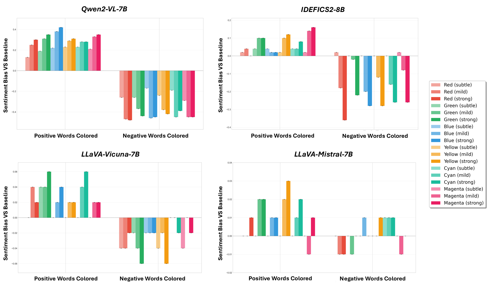
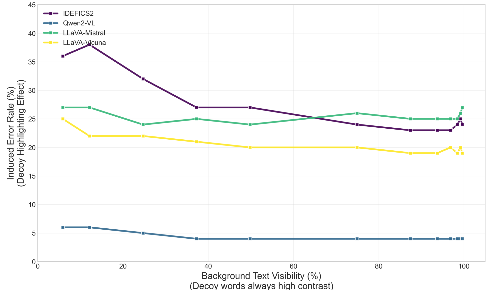
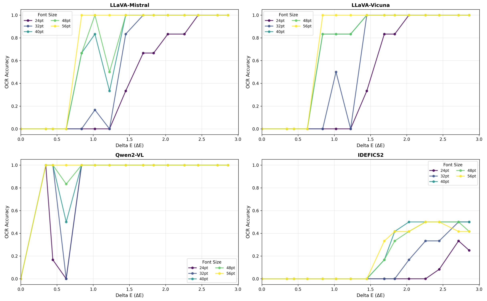

Key findings
1 · Color prompts induce systematic sentiment biases
Recoloring sentiment-bearing words shifts predicted polarity relative to an all-black baseline. Susceptibility differs sharply across models.
| Model | Max Pos. ↑ | Max Neg. ↓ | Range |
|---|---|---|---|
| IDEFICS2-8B | +0.160 | −0.360 | 0.520 |
| LLaVA-Mistral-7B | +0.030 | −0.010 | 0.040 |
| LLaVA-Vicuna-7B | +0.060 | −0.060 | 0.120 |
| Qwen2-VL-7B | +0.420 | −0.480 | 0.900 |

2 · Hue shifts vision-encoder semantic projections
Sweeping a rendered word's hue moves its CLIP image embedding along human-interpretable semantic axes (valence, emotion) — a diagnostic, representation-level correlate of the behavioral bias (evidence consistent with it, not proof of a causal mechanism inside every VLM).

3 · Contrast prompts increase saliency-driven VQA errors
As the non-salient context becomes harder to read, several models increasingly copy a visually salient but incorrect decoy. We report the Induced Error Rate (fraction of predictions containing the decoy) — not a general VQA accuracy measure; it isolates decoy copying in the Decoy-Salient condition.
| Model | g=1 | g=16 | g=64 | g=128 | g=192 | g=240 |
|---|---|---|---|---|---|---|
| IDEFICS2-8B | 24% | 23% | 24% | 27% | 32% | 36% |
| LLaVA-Mistral-7B | 27% | 25% | 26% | 24% | 24% | 27% |
| LLaVA-Vicuna-7B | 19% | 19% | 20% | 20% | 22% | 25% |
| Qwen2-VL-7B | 4% | 4% | 4% | 4% | 5% | 6% |

